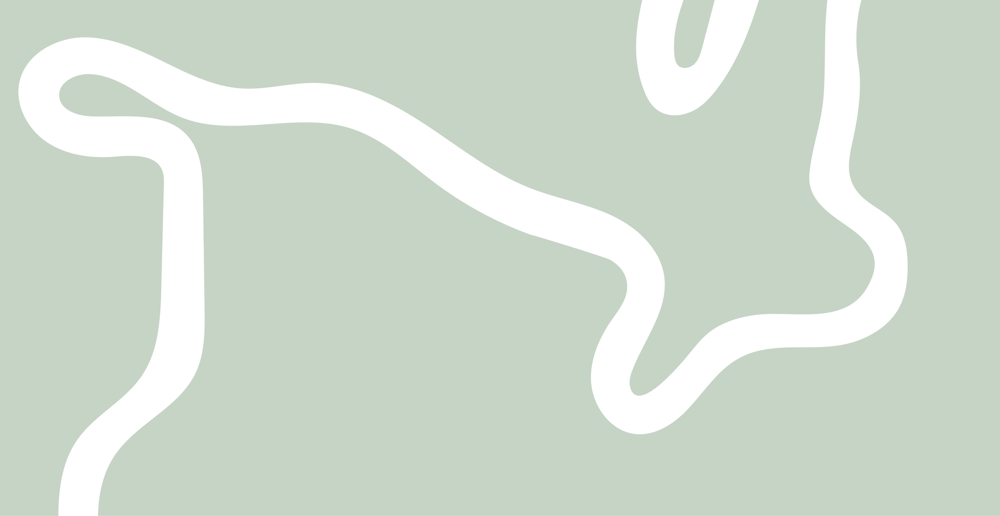
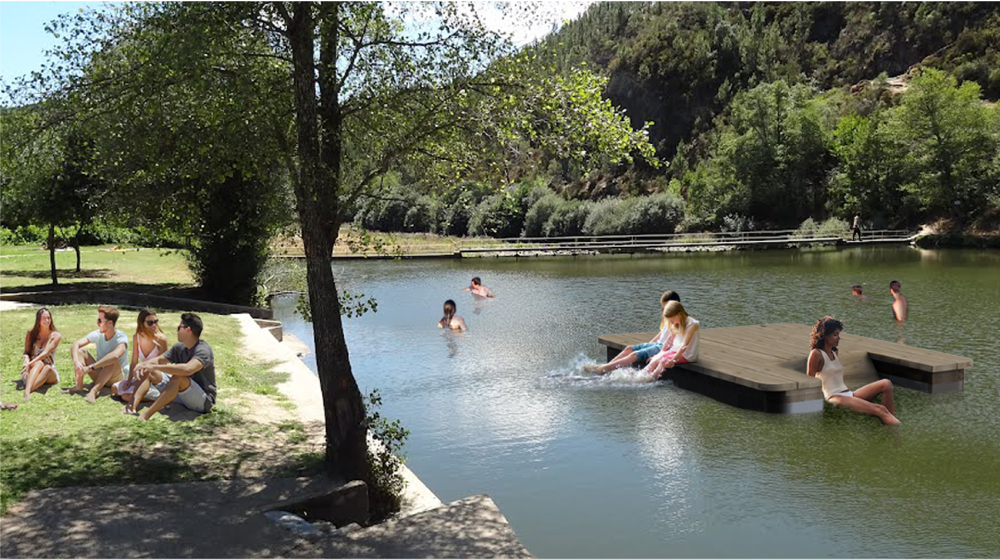

Janeiro de Cima é uma aldeia com uma identidade própria bem definida pelos seus fortes antecedentes historico-culturais. Edifícios de xisto e cores quentes marcam esta pequena zona rural onde todos se conhecem. Ao caminhar por entre os seus edifícios, deparamo-nos com ruas e pessoas que rapidamente nos começam a ser familiares.
"O rio é a única forma de passar o tempo."

cais
plataforma
A vontade de alimentar o já tão presente convívio na aldeia mostrada pelos locais, e a forte ligação com o rio, tanto como fonte de água para rega dos terrenos agrícolas e para os moinhos, como para efeitos de lazer, tornou imperativa a construção de uma plataforma móvel que permitisse experienciar o rio ao máximo, ser uma zona mais estável que a barca, permitindo uma melhor absorção e aproveitamento do que nos rodeia, apartir do centro do rio.

a equipa
Contactos:
tlf: 234 234 234 e-mail: grupo5@ua.pt
da esquerda para a direita: Mara Vieira Maria Miguel Cordeiro Maria Martis Madalena Palmeira Beatriz Melo